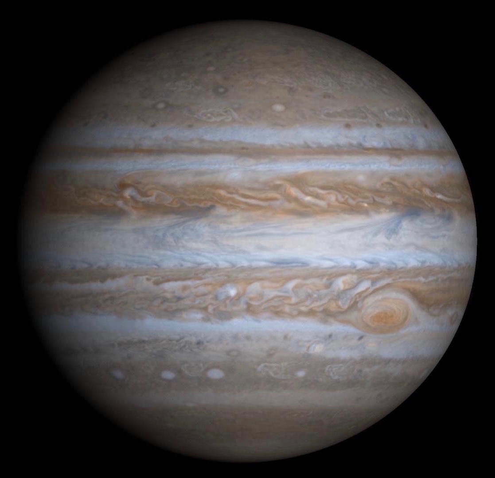

|  |
|---|
| Júpiter es el planeta más grande de nuestro sistema solar y un gigante gaseoso compuesto principalmente de hidrógeno y helio, con al menos 79 lunas conocidas. Es el quinto planeta desde el Sol, caracterizado por sus masivas nubes, vientos huracanados, la Gran Mancha Roja y un potente campo magnético. Su intensa gravedad lo ha convertido en un protector para los planetas interiores y es un objetivo visible en el cielo nocturno |